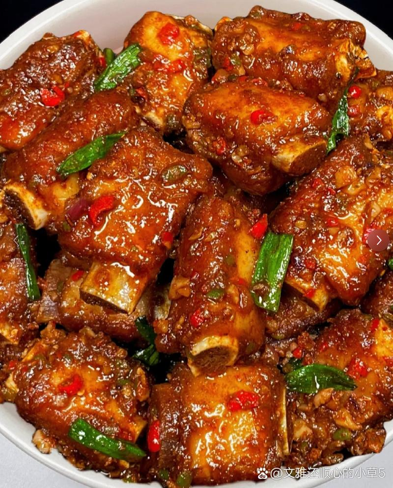

| 菜品图片 | 菜品名称 | 菜品简介 |
|---|---|---|
 |
白切鸡 | 白切鸡又叫白斩鸡，是中国八大菜之一粤菜系鸡肴中的一种，始于清代的民间酒店。白切鸡通常选用细骨农家鸡与沙姜、蒜茸、葱等食材，慢火煮浸后，晾干切块。成菜后，色洁白带油黄，皮爽肉滑骨香，清淡鲜美。白切鸡是岭南地区的菜，多选用三黄鸡做主料，分布于两广海南地区 |
| 清炒ong菜 | 这个适合做晚餐。 | |
 |
蒜蓉烤生蚝 | 蒜蓉生蚝是一道以生蚝为主要原料，搭配蒜蓉、香葱、小米辣等辅料制作的菜肴。这道菜不仅味道鲜美，还富含丰富的营养成分，包括蛋白质、氨基酸、铁和碘等物质，有助于改善血液循环和增强免疫力。 |
 |
碳烤羊肉串 | 烤羊肉串，在新疆是最有名的民族风味小吃之一。制作原料主要有羊肉、洋葱、盐等。把羊肉与洋葱拌匀腌渍一段时间可减少膻味。历史起源 从考古资料看，早在1800年前，中国内地就已有了烤羊肉串。《汉代画像》全集中就有烤羊肉串的石刻图像。 |
|  | 糖醋排骨 | 糖醋排骨是一道经典的中国菜肴，以其独特的酸甜口感和诱人的香气深受人们喜爱。这道菜源于中国南方，主要食材是猪排骨，通过独特的烹饪技巧使肉质鲜嫩，外皮酥脆，味道酸甜可口。 |
在城市的霓虹灯火与车水马龙之间，有一处充满故事与烟火气的所在 —— 我们的大排档。 多年前，怀揣着对美食的无限热爱与对生活的炽热憧憬，我们开启了这段大排档之旅。从最初那个毫不起眼的街边小摊，到如今已成为众多食客心中的美食地标，每一步都走得坚定且饱含深情。 我们坚信，美食是连接人与人之间情感的桥梁。因此，在食材的挑选上，我们始终坚守严苛的标准。每日清晨，穿梭于熙熙攘攘的菜市场，与熟悉的摊主们精心挑选每一颗新鲜的蔬菜、每一块鲜嫩的肉类、每一只活蹦乱跳的海鲜。这些带着大自然气息与新鲜活力的食材，是我们打造美味佳肴的基石。 多年来，我们见证了无数的欢笑与泪水，陪伴着一批又一批的食客度过了难忘的欢聚时刻。情侣们在这里开启甜蜜的约会，朋友们在这里畅聊人生的喜怒哀乐，家人们在这里共享天伦之乐。每一张桌子都承载着一段段珍贵的回忆，每一个角落都弥漫着浓浓的情谊。 未来，我们将继续坚守这份初心与热忱，不断努力提升品质与服务，用美食续写更多的故事，用热情迎接每一位朋友的到来。因为在我们心中，这不仅仅是一个大排档，更是一份情感的寄托，一个属于大家的美食乐园。